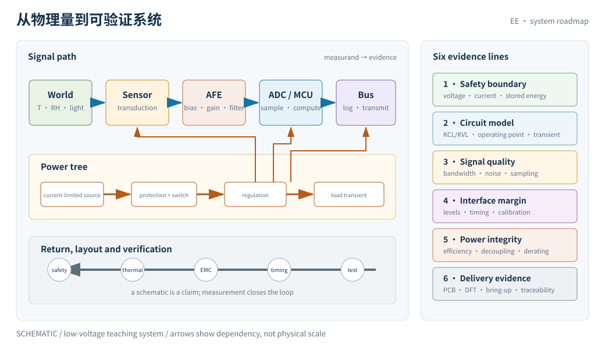

怎么读《电气与电子工程基础》
这门课从一个可测、可限流、可断电的目标开始：做出一个低功耗多传感器环境监测节点。它不把电路当成“元件连起来就会工作”的黑箱，而是持续追问电能从哪里来、信号怎样被表示、误差如何被测出、故障怎样被限制，以及一个设计在真实元件和真实布局下还能否成立。
一、这门课在解决什么问题
电气与电子工程的核心不是背元件符号，也不是把每个公式套进理想电路。它是在有限的电压、电流、功耗、带宽、面积、成本和可靠性约束下，把电源、信号、器件、互连、测量和验证组织成一个能工作的系统。
本课反复使用五个问题：
- 电能去了哪里：输入功率怎样分配到负载、储能、损耗和热？
- 信号是否可辨认：目标变化经过传感器、接口、滤波、采样和总线后，还剩多少可用信息？
- 模型在哪里失效：集总模型、线性模型、理想运放、理想地和理想开关分别在什么条件下不再可信？
- 故障会被限制吗：短路、反接、过压、浪涌、静电、过热和连接错误是否有明确的能量路径与保护边界？
- 怎样证明它工作：测量计划、容差、校准、测试点、日志和可重复的 bring-up 记录能否支持结论？
一句话概括：物理定律告诉我们什么可能，电气与电子工程决定如何在约束中把可能的东西做成可测、可维护的系统。

二、贯穿项目：低功耗多传感器环境监测节点
全课围绕同一个小型系统逐步加约束：一个低压限流的低功耗多传感器环境监测节点，由可断电电源供电，周期性唤醒，读取温度、湿度、光照或压力等传感器，完成必要的模拟调理和模数转换，再通过硬件总线记录或发送数据。它的目标不是做成某个商品，而是让每一章都能在同一份工程账本上留下可检查的证据。
| 阶段 | 课程问题 | 项目产物 |
|---|---|---|
| 需求与安全 | 允许的电压、电流、能量、环境和断电条件是什么？ | 安全边界、故障清单、验收条件 |
| 电路与动态 | 工作点、等效电路、时间常数和共振如何决定启动与响应？ | 原理图、计算表、波形预测 |
| 信号与测量 | 噪声、带宽、采样率和量化如何改变可辨认的信息？ | 测量计划、误差预算、校准记录 |
| 真实硬件 | 容差、寄生、数据手册额定值和保护器件如何改变理想结论？ | 器件选择依据、降额表、接口保护方案 |
| 数字与供电 | MCU 休眠/唤醒、PWM、总线时序和电源树能否共存？ | 电源预算、时序图、总线测试记录 |
| 交付与验证 | PCB 回流、EMC、可测性、装配和 bring-up 如何决定能否复现？ | 测试点清单、故障注入记录、最终验证报告 |
贯穿账本至少记录：工作电压范围、限流设定、睡眠与活动电流、峰值电流、各路功耗、传感器误差、采样与量化分辨率、总线失败模式、热与额定值余量，以及每一个结论对应的测量或计算证据。低压不自动等于无风险：电池、储能电容、热源、短路电流和错误接线仍需遵守实验室规则。
本项目只讨论低压、限流、可断电的教学硬件。明确不涉及市电施工：不讲建筑配电、插座安装、断路器选型、固定布线、并网、开关柜、带电市电测量，也不把任何页面当作市电操作规程。需要接入市电的产品或实验，必须交由有资质人员按当地法规和适用标准处理。
三、二十八章的地图
| 线 | 章节 | 主问题 |
|---|---|---|
| 安全与电路语言 | 01–04 | 怎样用参考方向、KCL/KVL、节点和端口描述一个受限流系统？ |
| 非线性、功率与动态 | 05–08 | 工作点、热、时间常数、阻尼和共振怎样决定真实响应？ |
| 交流、系统与测量 | 09–14 | 如何用阻抗、LTI、频谱、噪声、采样和量化管理信号？ |
| 真实器件与接口 | 15–18 | 数据手册、保护、运放和换能器怎样把理想模型接到世界？ |
| 数字、嵌入式与供电 | 19–23 | 电气逻辑、时序、MCU、总线和电源树如何一起工作？ |
| 互连、制造与可靠性 | 24–27 | 回流、EMC、信号完整性、PCB 可测性和 bring-up 如何保证复现？ |
| 收官 | 28 | 如何交付一个有证据链的低功耗多传感器环境监测节点？ |
每页尽量按同一个节奏组织：具体故障或现象 → 先作预测 → 理想模型 → 真实修正 → 测量/交互实验 → 失效边界 → 迁移到项目。第一遍阅读时，先写下“如果把这个参数加倍，哪个量会先坏”，再看公式和波形；复习时可以把页面当作速查表。
四、与已有课程的边界
相邻课程提供了重要地基，但本课的责任是电气系统的工程接口。边界不是墙：电场会进入走线，材料会改变电阻，软件会暴露时序问题；下表说明的是主要问题归属，不是互相隔绝。
| 已有课程 | 它主要回答 | 本课负责的交界问题 |
|---|---|---|
| physics | 电磁、热力学、波、场和基本守恒定律为什么成立 | 在集总近似、端口、阻抗、功率和可测量模型下怎样做电路判断；不重复完整 Maxwell 场论和基础物理推导 |
| micro | 半导体能带、器件物理、工艺、晶体管和芯片制造怎样工作 | 把 IC、MOSFET、二极管和 ADC 当作带条件的工程器件使用；不展开器件物理、先进制程或流片流程 |
| auto | 反馈、稳定性、状态估计和控制器怎样改变系统行为 | 关注传感器接口、执行开关、采样、PWM 电气实现和电源瞬态；不把闭环控制、机器人动力学或控制器综合作为主线 |
| cs | 算法、软件、体系结构、操作系统和数据如何计算 | 负责 MCU 的电气边界、总线、时序、复位、功耗和硬件/固件接口；不替代算法、OS、编译器或应用协议课程 |
| materials | 材料组成、缺陷、制备、结构与性能如何关联 | 用材料导致的容差、温漂、老化、封装和失效模式做选型与降额；不讲材料合成、晶体结构或材料表征主线 |
| photo | 光的传播、成像、光源、探测和光子器件如何工作 | 把光学/环境传感器视作电气换能器，处理偏置、噪声、采样和校准；不讲完整光学设计、激光或光通信系统 |
因此，本课程不是 physics 的“较浅版本”，也不是 micro、auto、cs、materials 或 photo 的替代站。它的独特工作对象是：一个跨越元件、信号、供电、布局、测量和验证边界的可交付电气系统。
五、阅读所需的前置与证据纪律
高中代数、函数图像、基本单位换算和一点电压电流直觉足以开始。微积分、复数、线性代数和概率会在需要时以最小铺垫出现；不会把“会解方程”误当成“会做设计”。
每页的结论应区分三种证据：
- 模型结论：由 KCL/KVL、器件方程、频域或时域假设推出，并写明假设；
- 实验结论：由仪器、探头、采样率、校准和重复测量得到，并保留不确定度；
- 工程约束：来自数据手册、IEEE 标准、认证框架或项目安全边界，不能用漂亮的仿真曲线替代。
具体器件的额定值、标准条款、EMC 限值和安全要求随型号、版本、地区和应用场景变化；课程中的示例只用于训练判断，不构成采购、认证、施工或现场操作建议。
六、最小阅读路径
时间有限时先读：01 安全 → 03 KCL/KVL/节点 → 06 功率与热 → 07 一阶动态 → 09 相量与阻抗 → 13 噪声 → 14 采样 → 17 运放接口 → 21 MCU/PWM → 23 电源树 → 28 收官。这条路径覆盖安全、电路、动态、信号、器件、嵌入式和交付验证。
课程级资料入口见 SOURCES.md。后续讲义应在页末保留“资料与边界”小节，说明用了哪个权威入口、哪些数字会变化，以及读者不应把简化模型外推到哪里。
下一页从最先要守住的边界开始：怎样在低压、限流和可断电条件下建立安全的电气实验回路。